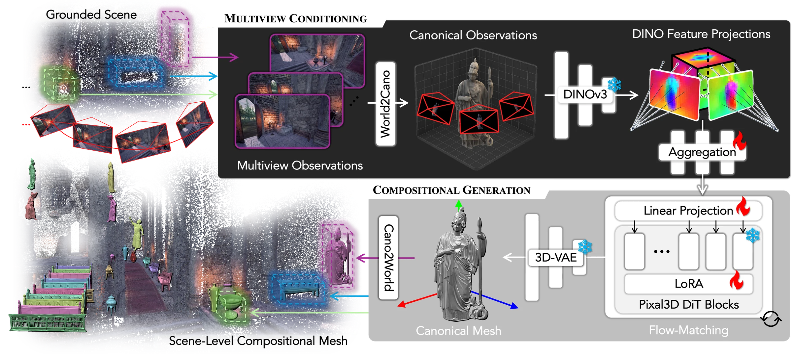

Generating Compositional Worlds
from Grounded Videos
△ Alaya Lab ♣ The University of Tokyo
Correspondence: Zhixiang Wang (Project Lead), Kaipeng Zhang
Given RGB images with instance masks and 3D boxes, WorldSculpt produces a compositional mesh representation for very complex scenes consisting of hundreds of individual objects.
We propose WorldSculpt, a framework that reconstructs cluttered scenes of hundreds of objects into complete per-object meshes.
We modify Pixal3D, a single-object generative prior, to consume occluded multiple views, and leverage it for compositional scene generation.
We introduce a benchmark of densely-cluttered scenes with hundreds of objects, and show that the same pipeline turns generated 3DGS worlds (e.g., Marble) into compositional meshes.
Every object is an individual mesh. Hover to highlight an object, click to isolate it, and drag the slider to pull the scene apart. This is what compositional means.
The viewer uses compressed mesh for interactive viewing. To obtain the original meshes, refer to the GitHub repository.
We run WorldSculpt on 3D Gaussian Splatting scenes generated by World Labs' Marble: from rendered views of each generated 3D Gaussian Splattings scene, WorldSculpt reconstructs instance mesh for every object. The source 3DGS scene (left) and the reconstructed meshes (right) share one synchronized camera — drag either side, or pull the explode slider to take the parts out of the world.
The Marble 3DGS is pruned to 800k gaussians for web viewing. The viewer uses compressed mesh for interactive viewing. To obtain the original meshes, refer to the GitHub repository.
WorldSculpt inherits the object-level prior of Pixal3D and equips it with a spatially-grounded, multi-view conditioning pathway — per-view DINOv3 features are lifted into the object's canonical voxel grid and fused by a permutation-invariant IBR-style aggregator, injected through zero-initialized layers and LoRA.

Each object's 3D box defines a canonical cube; the anchor view fixes its orientation. Posed scene images are cropped, masked, and mapped into the virtual canonical space the generative prior expects.
DINOv3 features from every view are lifted into the canonical voxel grid by off-center projection and fused with a learned, permutation-invariant aggregator — so occluded regions are plausibly synthesized while observed regions stay faithful.
Every generated mesh is complete and self-consistent, so composing the scene reduces to rigid transforms — no cross-object fusion, no per-object post-hoc optimization. Trained only on single canonical objects, it scales to hundreds per scene.
Six photorealistic environments rendered in Unreal Engine 5.8 at 2560×1440, densely populated with up to several hundred assets in natural arrangements — with complete per-object meshes, camera poses, instance masks, 3D boxes, and metric depth.
Due to copyright restrictions we cannot release the GT meshes. To evaluate on the benchmark, please contact Zhixiang Wang (zhixiang.wang@shanda.com).
@misc{niu2026worldsculptgeneratingcompositionalworlds,
title={WorldSculpt: Generating Compositional Worlds from Grounded Videos},
author={Muyao Niu and Jixuan He and Ruihan Yu and Lian Fu and Yonghao Yu and Zheng-Hui Huang and Yifan Zhan and Fengbo Lan and Yongtao Ge and Yinqiang Zheng and Kaipeng Zhang and Zhixiang Wang},
year={2026},
eprint={2609.05416},
archivePrefix={arXiv},
primaryClass={cs.CV},
url={[https://arxiv.org/abs/2609.05416}](https://arxiv.org/abs/2609.05416),
}